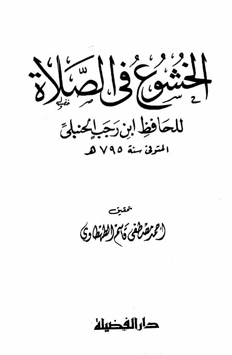

الخشوع في الصلاة
Authors: ابن رجب الحنبلي
Editors: أحمد مصطفى قاسم الطهطاوي
Publishers: دار الفضيلة
Download Downloads need an internet connection.
- Country
- دبي، الإمارات • القاهرة، مصر
- Edition
- 1
- Volumes
- 1
- Pages
- 112
- Type
- كتاب
- Category
- الدعوة والاحتساب
Description
**▫️ العنوان: الخشوع في الصلاة** ▪️ المؤلف: #عبد_الرحمن_بن_أحمد_بن_رجب_الحنبلي ▫️ المحقق: #أحمد_مصطفى_قاسم_الطهطاوي ▪️ الناشر: #دار_الفضيلة ▫️ بلد النشر: دبي، #الإمارات • القاهرة، #مصر ▪️ الطبعة: 1 ▫️ عدد الأجزاء: 1 ▪️ الصفحات: 112 ▫️ نوع الوعاء: #كتاب ▪️ التصنيف الرئيسي: #الدعوة_والاحتساب ۪